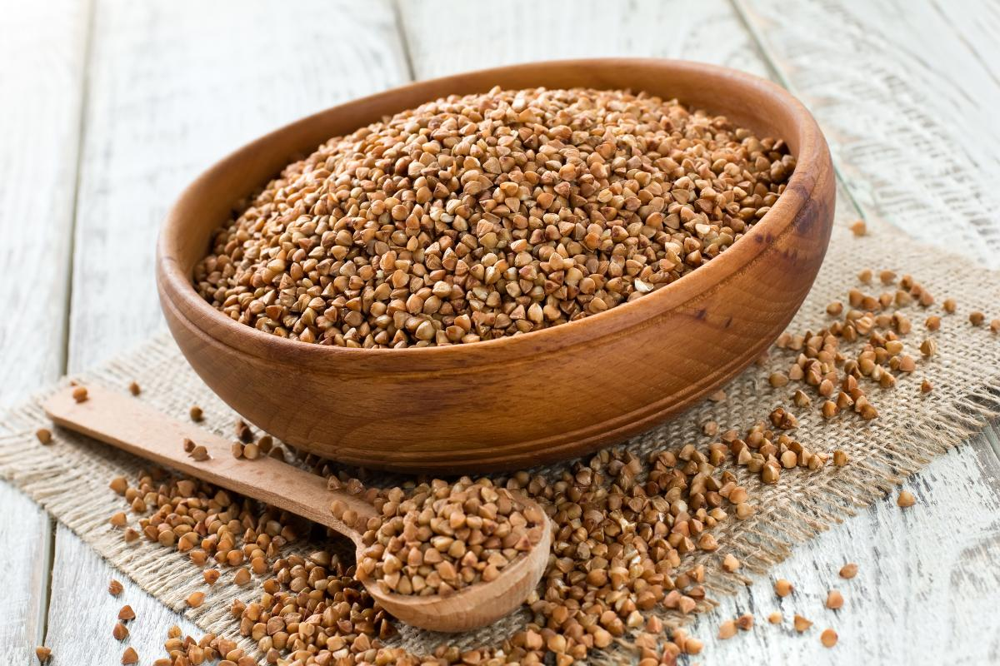

Є каші, які можна заливати холодною водою, кефіром, молоком
Через масовані удари на інфраструктуру багато українських міст залишаються без електрики та газу. Як харчуватися в такому випадку, що приготувати, якщо не має електрики та газу.
Деякі крупи достатньо на деякий час залити водою, а є крупи, які можна споживати, навіть не заливаючи їх окропом.
Центр стратегічних комунікацій та інформаційної безпеки радить на випадок надзвичайних ситуацій заздалегідь запастися консервами, сухою сублімованою їжею та супами, кашами та пюре, яких, для того, щоб споживати, достатньо залити холодною водою.
Каші, які можна заливати окропом для споживання:
- Ячну крупу достатньо залити кип’яченою водою і залишити на 2-3 години.
- Для приготування пшоняної каші потрібно залити крупу окропом на одну годину.
- Щоб приготувати пшеничну кашу, достатньо залити окропом крупу, закутати посудину в ковдру та почекати 30-50 хвилин для настоювання.
- Булгур для швидкого приготування краще брати середнього або дрібного розміру. Дрібний булгур настоюється в окропі 20 хвилин, середній – 40 хвилин.
Для приготування цих каш, найкраще настоювати їх в термосі.

Каші, для приготування яких не обов'язково потрібний окріп:
Ці каші можна заливати холодною водою, кефіром, молоком:
- Гречану крупу потрібно заздалегідь залити водою, молоком або кефіром, краще за все це зробити звечора в пропорції 1:2, щоб зранку можна було їсти. В магазинах продається гречка, на пакуванні такої гречки зазначається, що вона обсмажена й висушена. Тому простої води буде достатньо, аби вона набухла і стала придатною для їжі. У воді вона має настоятися приблизно 5 години. А ліпше 8-10. Після цього її можна вживати.
- Перлову крупу можна заливати як окропом, так і звичайною водою. Заливають її з розрахунку 1:3, а настоюватися в холодній воді вона повинна ще довше, ніж гречана — до 24 годин.
- Швидко у звичайній воді "готується" кускус. Достатньо залити кускус на 20-30 хвилин для приготування. А якщо є окріп вистачить і 5-10 хвилин.
- Щоб приготувати вівсяні пластівці, залийте їх холодною водою на 30 хвилин, якщо окропом, часу знадобиться ще менше.
- Манну кашу залийте холодною водою або молоком та дайте настоятись 15-20 хвилин.
- Кіноа потрібно залити холодною водою на ніч.